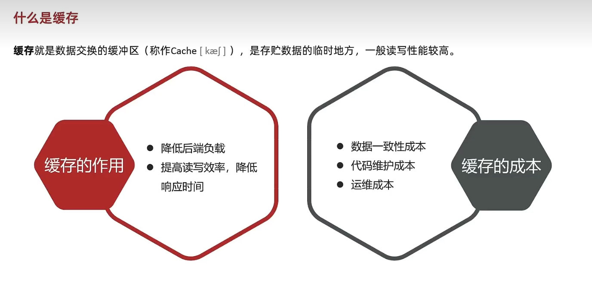
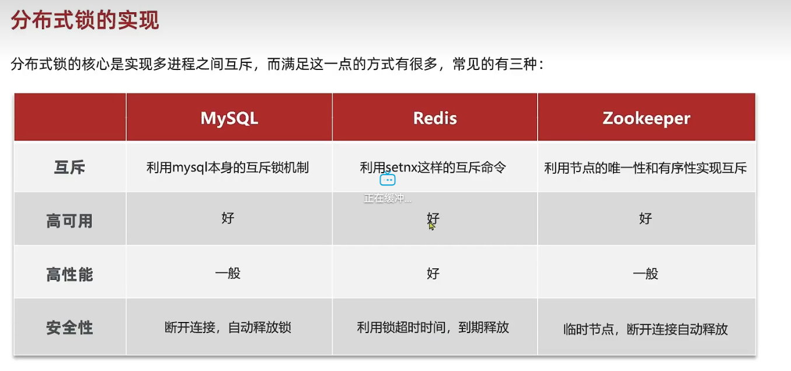

大三上的寒假，玩了两周后，觉得该学一些东西了，于是在 b 站上找项目跟做，最后在鱼皮的推荐下，跟做了黑马的 redis。
# 问题 1：RESP 连接不上虚拟机上的 redis
# 搜索了 CSDN，RESP 项目下的 issue，做了如下操作：
我检查了配置文件，重新按照安装说明配置了一遍 redis，都无法解决
—> 不是 redis 的问题
我又试了试我电脑能不能 ping 上虚拟机，查找了如何获取虚拟机的 ip（ ip addr ），ping 成功了
—> 不是我电脑的问题
虚拟机没学，于是我也束手无策了
吃完饭后又尝试搜了一下，看了一下 免费 Redis 图形化界面（RESP）下载地址和连接步骤 ，发现里面有写到连接不上的问题，是 linux 的防火墙拦截了（不太懂 ping 的规则，能 ping 成功，但是防火墙会拦截）
# 连接不成功：尝试在 linux 中执行下面的两个命令：
以下命令是用于配置 Linux 防火墙（firewalld）以开放指定的端口 （6379/tcp）。
1、
firewall-cmd --zone=public --add-port=6379/tcp --permanent
这个命令添加一个规则到 “public” 区域（zone）的防火墙配置中，允许通过端口 6379 的 TCP 连接。–permanent 参数表示该规则将被永久保存，重新启动后仍然有效。
2、
firewall-cmd --reload
这个命令重新加载防火墙规则，使最新的修改生效。当你添加、删除或修改防火墙规则时，都需要执行这个命令才能使更改生效。
注意事项：
以上命令需要以管理员权限（例如 root 用户或者使用 sudo）来执行。
1、在执行前，请确保已经安装了 firewalld，并且正在运行。
2、6379 是 Redis 默认的端口号，如果你在使用其他端口，则需要相应地修改上述命令中的端口号。
# git 问题
F:\HexoBlog2>ssh -T git@github.com
ssh: connect to host github.com port 22: Connection timed out
# 解决
此处是端口问题，可能是被占用了或者什么的
$ git clone git@github.com:xxxxx/xxxx.git my-awesome-proj
Cloning into 'my-awesome-proj'...
ssh: connect to host github.com port 22: Connection timed out
fatal: Could not read from remote repository.
$ # This should also timeout
$ ssh -T git@github.com
ssh: connect to host github.com port 22: Connection timed out
$ # but this might work
$ # 换个端口尝试，成功
$ ssh -T -p 443 git@ssh.github.com
Hi xxxx! You've successfully authenticated, but GitHub does not provide shell access.
$ # Override SSH settings
$ # 添加一个配置文件，会读取该文件，使用配置的端口
$ vim ~/.ssh/config
```
# Add section below to it
Host github.com
Hostname ssh.github.com
Port 443
```
$ ssh -T git@github.com
Hi xxxxx! You've successfully authenticated, but GitHub does not
provide shell access.
$ git clone git@github.com:xxxxxx/xxxxx.git my-awesome-proj
Cloning into 'my-awesome-proj'...
remote: Enumerating objects: 15, done.
remote: Counting objects: 100% (15/15), done.
remote: Compressing objects: 100% (14/14), done.
remote: Total 15 (delta 0), reused 15 (delta 0), pack-reused 0
Receiving objects: 100% (15/15), 22.90 KiB | 4.58 MiB/s, done.
# 记录
# 短信登陆部分

# 缓存

# 缓存更新策略
一般用第一个
# 缓存穿透
# 缓存雪崩
# 缓存击穿
# 优惠券秒杀
# 全局 ID 生成器
# 实现功能
# 超卖问题


# 一人一单功能
# 分布式锁
# 并发安全问题
多个 JVM 的锁监视器不一样，会同时放行

# 基于 Redis 的分布式锁
# 超时释放导致误删
# 原子性问题 （事务）
解决方法
用 Lua 脚本批量执行命令，达到原子性
# Redission
# 使用 Redission 的分布式锁
# 优化优惠券秒杀
把抢购和下单分开
# 基于 Redis 优化秒杀资格判断（使用 Lua 脚本）
# 基于阻塞队列优化异步下单
# 问题 & 解决（消息队列）
# 消息队列
<img src="image-20240412183222085.png" alt="image-20240412183222085" style="zoom: 50%;" />
# redis 的 list 模拟消息队列
…
# pubsub 发布订阅
# STREAM 类型消息队列
<img src="image-20240412182643317.png" alt="image-20240412182643317" style="zoom:50%;" />
<img src="image-20240412183033083.png" alt="image-20240412183033083" style="zoom:67%;" />
# 功能 - 达人探店
# 发布
…
# 查看
…
# 点赞功能
…
# 点赞排行榜
在 Redis 获取 top n
# 功能 - 好友关注
# 关注取关
…
# 共同关注
把关注列表放到 redis，取交集
# Feed 流
实现方案
# 推送到粉丝收件箱
…
# 滚动分页查询收件箱的思路
…
# 实现滚动分页查询
…
# 附近商户
# GEO 数据结构
# 导入店铺数据到 GEO
…
# 实现附近商户功能
…
……